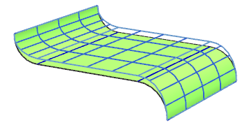

壁变形沿给定方向对壁进行变形，并保持与相邻圆角相切。

区域限制 — 选择一条或多条开放曲线(曲线 1 和曲线 2)作为要修改的区域边界。在这些曲线外，变形为零。
目标曲线 — 选择曲线以指定沿曲线的变形高度。
偏置选项：
值 — 用于指定沿目标曲线的恒定偏置值。必须提供偏置值。
规律控制 — 使用规律子函数来通过规律指定高度。
在曲线上 — 指定开放曲线作为加冠高度。变形的片体将插补指定的曲线。
区域偏置曲线 — 选择两条开放曲线(区域偏置曲线 1 和区域偏置曲线 2)来定义区域偏置边界。这两条曲线之间的区域是沿垂直于目标曲线的每个截面按恒定值偏置得来的。偏置量由截面上目标曲线的高度确定。
投影方向 — 指定将两条区域限制曲线和两条区域偏置曲线投影到平面上的方向。如果投影的点在区域限制曲线之外，则该点处的变形为零。如果投影的点在两条投影的区域偏置曲线之内，则偏置将是沿垂直于目标曲线的每个截面的一个恒定值。